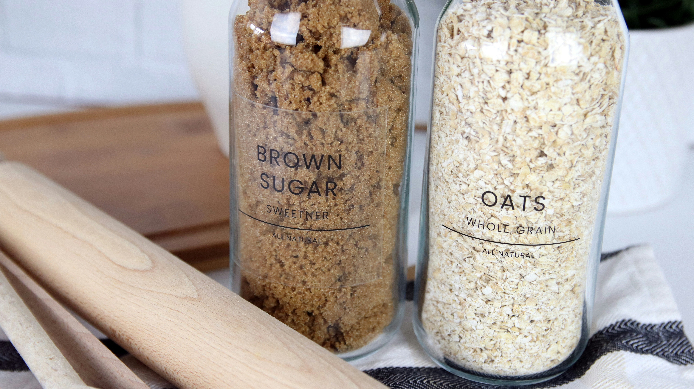

Oatmeal cookies, a very easy and delicous homemade treat.
Made with just a few simple ingredients and always make the kitchen smell amazing while they bake.
The best part is how customizable mix in raisins, chocolate chips, or even a handful of nuts.
Ingredients:
- 1 cup flour
- 1 tbs milk alternative
- 2½ cups oatmeal
- 1 cup brown sugar
- ½ cup white Sugar
- 2 tspbakingpowder
- 1 cup "butter"
- 2 tsp vanilla extract
- 1 egg
Optional:
- chocolate chips
- raisins
- cinnamon
Dairy Alternative
There are plenty of dairy free butter options readily availble such as vegan butter or my fav "i cant belive its not butter"
Oat milk is my preffered dairy alternative.
Homeade oatmilk is amazing as the process is easy and the pulp left over can be used in baking.
I love using 1 cup of oat pulp in my cookies, it makes for a softer and smoother cookie
Oat Milk Recipe Here
Recipe
Step 1: mix togther butter and sugars till smooth
Step 2: add in the egg mix togther with baking powder and vanilla
Step 3: mix in the oat meal or pulp with the flour
Step 4: sitr until thick dough is formed and chill in fridge for 20 mins
Step 5: scoope about 2tbs of dough onto greesed baking sheet and bake for 20 mins at 350f
